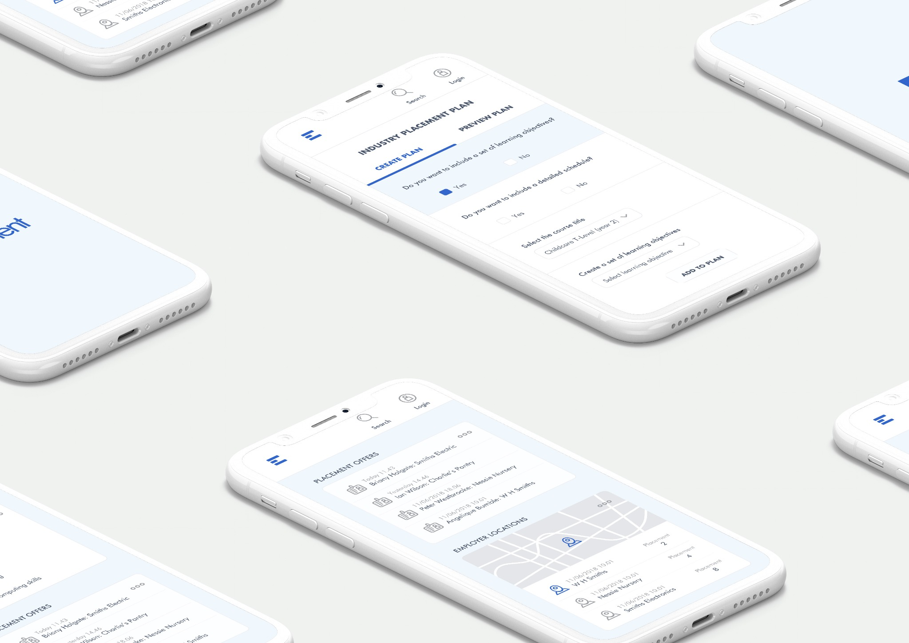
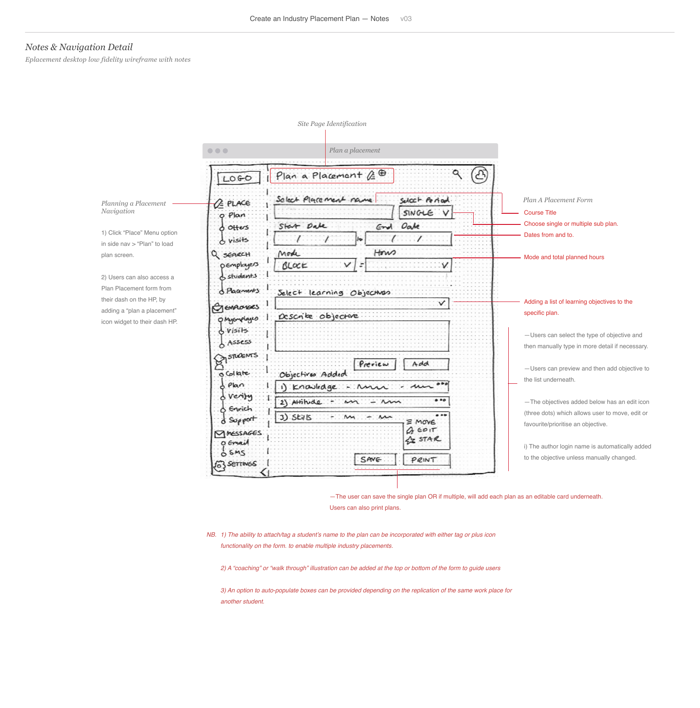
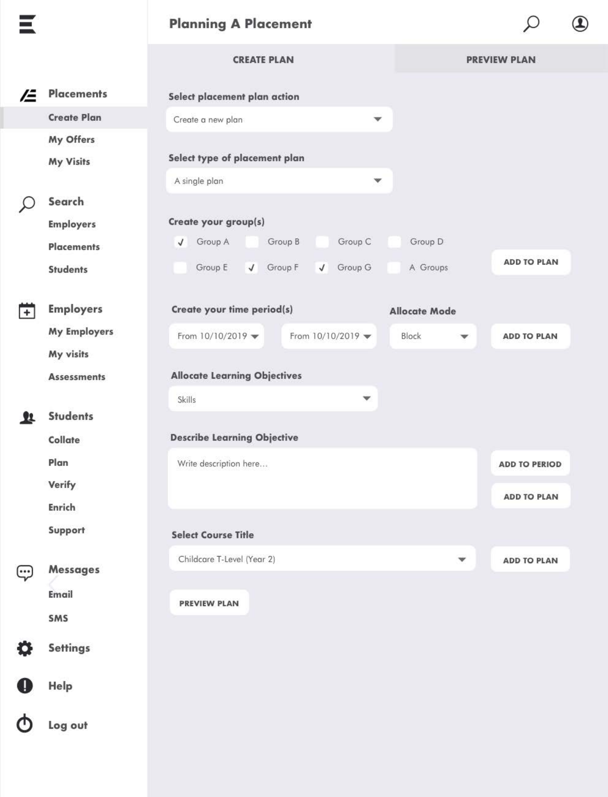
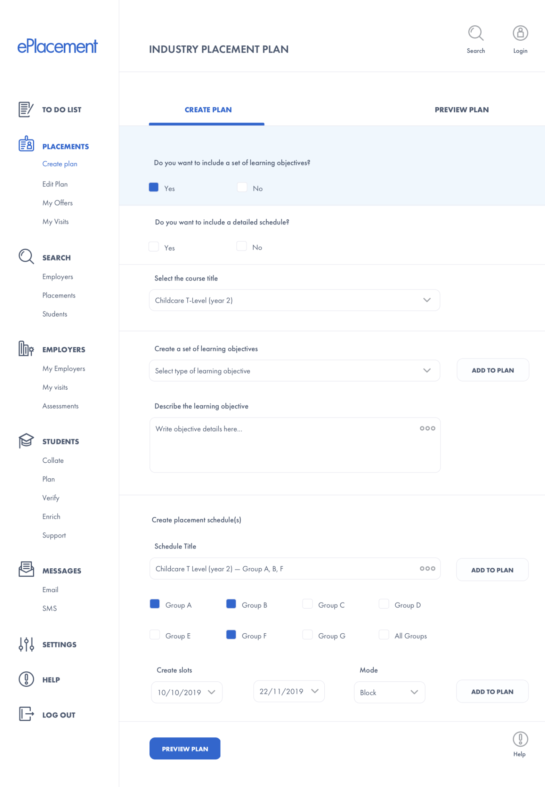
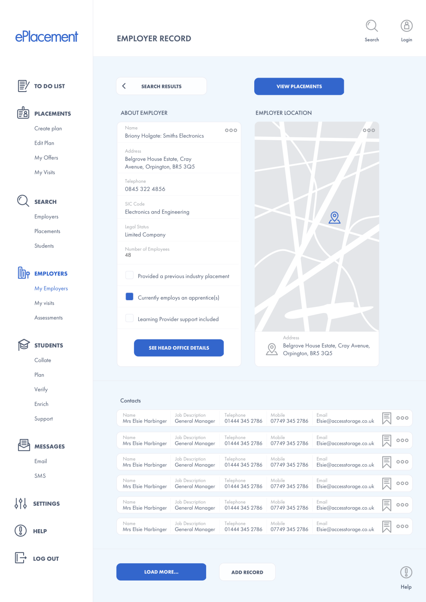
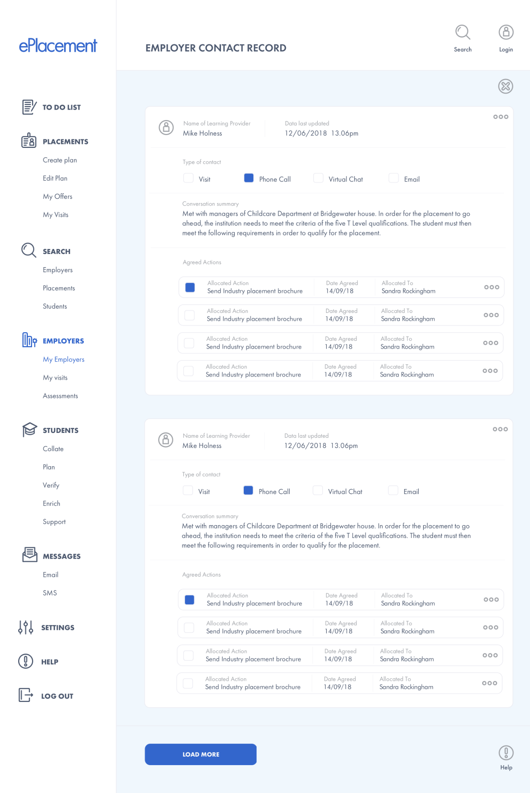
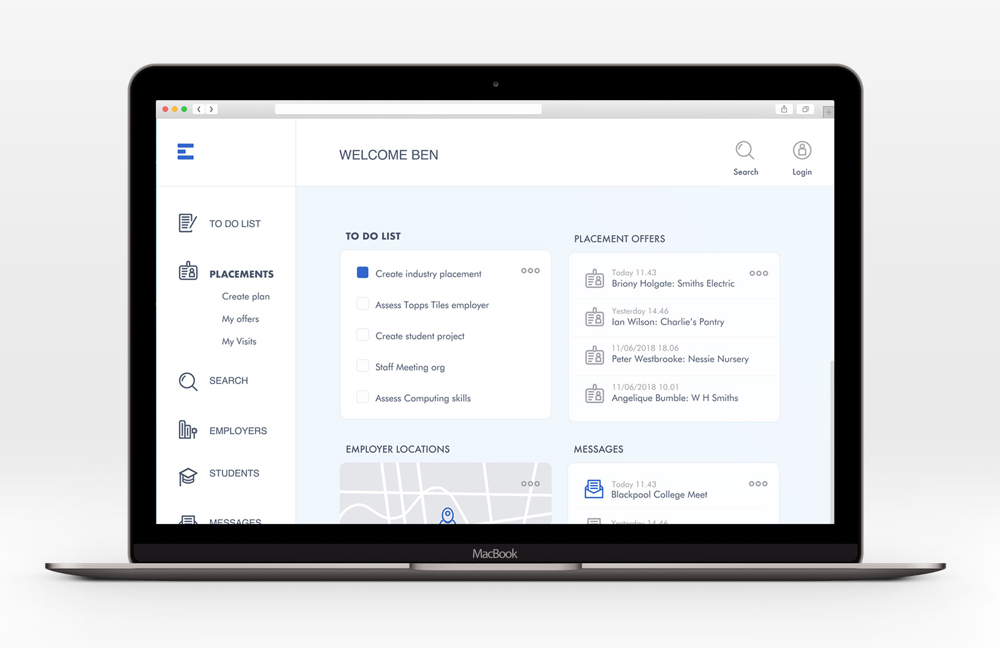

End-to-end product design case study · Education technology
PlacePath: designing an end-to-end placement management product
Turning complex requirements across learning providers, employers and students into a focused MVP and connected, role-based workflow.
As the independent Product Design Consultant, I owned the phase-one design lifecycle: refining requirements, prioritising the MVP, mapping the service, prototyping key journeys and delivering implementation-ready UI across all breakpoints.

- Role
- Lead Product Design Consultant
- Users
- Placement teams, employers and students
- Product scope
- Responsive placement management MVP
- Ownership
- Definition, flows, prototypes, UI and handoff
Modern product evolution
Explore the product across three connected roles
Building on the original requirements and workflows, I evolved PlacePath into a mobile-first prototype with a modern component system, improved accessibility and connected role-based data.
Try it: sign in with a sample profile, switch roles and explore the shared Tasks, Placements, Employers and Messages workflows.
Challenge and role
Bringing a fragmented placement process into one product
A learning-technology company commissioned me through my independent design studio to shape phase one of a new placement-management product. The initial brief contained overlapping needs across learning providers, employers and students, but not yet a single coherent product experience.
My task was to move from requirements to an implementable product: clarify the core problem, define the MVP, map the service and key journeys, prototype the interaction model and deliver the final interface system.
Product definition
Focusing phase one on the operational workflow
I focused the first release on learning-provider staff responsible for planning, sourcing, coordinating and monitoring placements. Separating operational essentials from later opportunities kept the core workflow coherent.
Core MVP
Operate the placement service
- Plan placements and complete due diligence
- Search and manage employer contacts
- Confirm offers and record communication
- Share files, schedule visits and notify stakeholders
Later opportunities
Extend student development
- Analytics and student results
- Career planning and employability assessment
- Additional-support reviews
Product evolution
From workflow sketch to resolved interface
I used a clickable low-fidelity prototype to review the workflow before progressing the placement-planning journey through structure, hierarchy and final visual design.



Final workflow
Review before commitment
Coordinators could build a plan progressively, preview the complete record and return later to edit it. This supported careful checking before submission, printing or sharing.

Connected records
Keeping employer context and conversations together
The employer journey connected site details, contacts, recorded conversations and placement activity. Reusable record patterns preserved context as coordinators moved from identifying an employer to managing an active relationship.


Delivery and reflection
A coherent foundation for implementation
I delivered the responsive interface across desktop, tablet and mobile breakpoints, alongside the clickable prototype, style guidance and supporting PNG, JPG and SVG assets for developer handoff. The product connected placement plans, employers, conversations and ongoing support within one role-aware structure.

If evolving the product today, I would validate the highest-risk workflows with learning-provider teams, establish task-level success measures and use a modern component system to make permissions, status and responsive behaviour explicit.